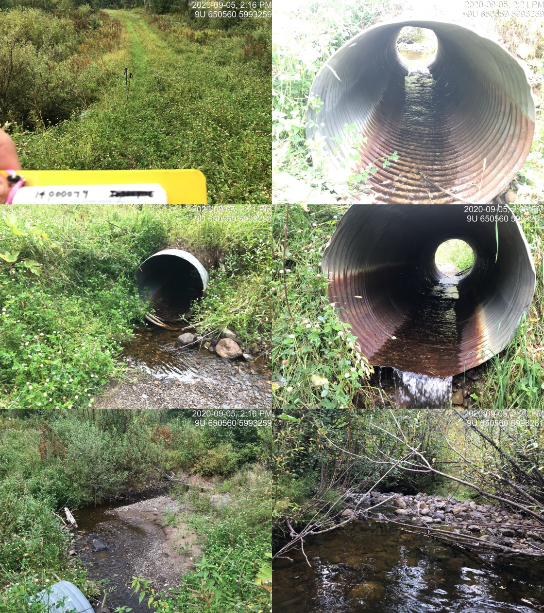

Appendix - Crossing 197360 - Riddeck Creek
Site Location
PSCIS crossing 197360 is located on Riddeck Creek at km 47 of the Morice-Owen FSR accessed from Houston, BC. The Morice-Owen FSR is a forest tenure road and the responsibility of the BC Ministry of Forests, Lands, Natural Resource Operations & Rural Development (FLNR) - Nadina District. The area immediately to the south of the subject crossing is a conservation area manged by the Nature Trust of British Columbia.
Background
Riddeck Creek flows through an extensive area of wetland type habitat into the top end of Owen Lake approximately 1km downstream of the crossing. Owen Lake is drained by Owen Creek emptying into the Morice River approximately 20km to the north. At the crossing location, Riddeck Creek is a 4th order stream with a watershed area upstream of the highway of approximately 29km2. The elevation of the watershed ranges from a maximum of 1140 to 750m at PSCIS crossing 197360. Riddeck Creek is known to contain longnose sucker and rainbow trout usptream of the subject culvert (MoE 2020a). On the north side of the upper watershed, at an elevation of 1160m, are the 25ha Neuch Lakes. The limit of fish distribution in the Riddeck Creek mainstem is documented by Bustard and ssociates Ltd. (1999) as a 6m high waterfall located 2.4km upstream of the FSR with the three main tributary systems classified as either non-fish bearing or fish bearing for only short distances (<200m) from the mainstem. At the time of reporting, as an initiative of the Forest and Range Evaluation Program as well as the Bulkley Valley Research Centre, FLNR and the BC Ministry of Environment and Climate Change Strategy were undertaking a watershed status evaluation of the Owen Creek watershed (Pickard et al., n.d.). The evaluation uses remotely sensed and field based surveys to interpret the current functioning condition of the watershed as well as its possible future state as a result of continuing human and natural activities by ranking eight indicators of watershed pressure related to riparian health, fish passage and fine sediment delivery (Pickard et al. 2014; Porter et al. 2019).
PSCIS stream crossing 197360 was prioritized for follow up with a habitat confirmation through consultation with Lars Reese-Hansen (Aquatic Habitat Specialist, FLNR) and Don Morgan (Wildlife Habitat Specialist, MoE). They indicated (pers comm.) that following fish passage assessments in 2014 (implemented through watershed status evaluation field surveys throughout the Owen Creek watershed), Riddeck Creek upstream of the crossing contained the highest value habitat potentially blocked by a road-stream crossing barrier. A map of the watershed is provided in Attachment 1 – Map 093L.104.
Stream Characteristics at Crossing
At the time of the survey, the culvert was un-embedded, non-backwatered and considered a barrier to upstream fish passage. The pipe was 1.2m in diameter with a pipe length of 27m, a culvert slope of 1%, a stream width ratio of 1.8 and an outlet drop of 0.24m (Table 4.6). Water temperature was 15\(^\circ\)C, pH was 6.8 and conductivity was 140uS/cm. A survey was conducted with a remotely piloted vehicle immediately upstream and downstream of the crossing. The resulting images were stitched into a 3-dimensional model (4cm resolution) covering an area of approximatley 12ha presented in Figure 4.2 and downloadable as a google earth kmz file here.
Figure 4.2: Interactive 3D model of habitat immediately upstream and downstream of PSCIS crossing 197360.
Stream Characteristics Downstream
The stream was surveyed downstream from the culvert for 300m. Overall, total cover amount was rated as moderate with overhanging vegetation dominant. Cover was also present as small woody debris, large woody debris, undercut banks, deep pools, and instream vegetation (Table 4.8, Figure 4.4). The average channel width was 3.7m, the average wetted width was 3.2m and the average gradient was 1.1%. The dominant substrate was fines with gravels subdominant. A somewhat recent burn was noted within a forested area on left bank of stream. Habitat was rated as moderate as it was considered an important migration corridor with moderate value habitat for fry/juvenile salmonid rearing.
Stream Characteristics Upstream
The stream was surveyed upstream from 197360 for 1200m. Immediately upstream of the crossing for a distance of approximately 150m is a beaver influenced wetland with a beaver dam structure located approximately 40m upstream of the road. Within the area surveyed, total cover amount was rated as moderate with deep pools dominant. Cover was also present as small woody debris, large woody debris, boulders, undercut banks, and overhanging vegetation (Table 4.8, Figure 4.5). The average channel width was 3.3m, the average wetted width was 1.8m and the average gradient was 2.7%. Abundant gravels and small cobbles suitable for resident, fluvial, adfluvial and anadromous salmonid spawning were present throughout the area surveyed. Habitat value was rated as high for salmonid rearing and spawning.
PSCIS culvert 197669 was documented on Riddeck Creek, 1.2km upstream of the FSR and PSCIS crossing 197360. The culvert was un-embedded, non-backwatered and considered a barrier to upstream fish passage. The pipe was 1.25m in diameter with a pipe length of 6m, a culvert slope of 2%, a stream width ratio of 2.1 and an outlet drop of 0.45m (Table 4.7).
Fish Sampling
To assess potential impacts of the culvert on fisheries values in the stream, electrofishing was conducted upstream and downstream of the crossing. Two sites were sampled upstream and one site was sampled downstream. A total of 14 rainbow trout captured upstream with 2 rainbow trout captured downstream (Figure 4.6). Raw results are included in digital format as Attachment 2 and summarized in Tables 4.9 - 4.10 and Figure 4.3.
Structure Remediation and Cost Estimate
Structure replacement with a bridge (10m span) is recommended to provide access to the habitat located upstream of PSCIS crossing 197360. In addition to not facilitating high velocities and erosion due resulting from flow constriction, structures with large openings in relation to stream channel size have been demonstrated to reduce the likelyhood of structure blockage due to beaver (Jensen et al. 2001). The cost of the work is estimated at $125000 for a cost benefit of 9.6 linear m/$1000 and 31.7m2/$1000.
Conclusion
There is 1.2km of habitat upstream of crossing 197360 and downstream of PSCIS barrier culvert 197669. Habitat in this area was rated as high value for salmonid rearing/spawning. Remediation of PSCIS culvert 197669 would facilitate fish passage to an additional 1.5km of habitat upstream of the area surveyed and should also be considered. Densities of rainbow trout fry captured at upstream sites were higher than the density of fish captured downstream however this may have been a result of habitat differences and difficult electrofishing conditions downstream including thick shrub overhead cover and areas deep water. Although only rainbow trout were captured both upstream and downstream the stream contains habitat likely suitable for spawning and rearing for other species including lamprey, burbot, coho salmon and others. In order to delineate pre-road channel locations/conditions and to inform the positioning of a replacement bridge, a pre-road hydrology assessment could be undertaken. The Morice-Owen FSR is under tenure of the Ministry of Forests, Lands, Natural Resource Operations & Rural Development. The crossing was ranked as a high priority for proceeding to design for replacement.
| Location and Stream Data |
|
Crossing Characteristics | – |
|---|---|---|---|
| Date | 2020-09-05 | Crossing Sub Type | Round Culvert |
| PSCIS ID | 197360 | Diameter (m) | 1.2 |
| External ID | NA | Length (m) | 27 |
| Crew | AI, KP | Embedded | No |
| UTM Zone | 9 | Depth Embedded (m) | NA |
| Easting | 649936 | Resemble Channel | No |
| Northing | 5992406 | Backwatered | No |
| Stream | Riddeck Creek | Percent Backwatered | NA |
| Road | Morice-Owen FSR | Fill Depth (m) | 2.5 |
| Road Tenure | FLNR Nadina 9947 | Outlet Drop (m) | 0.24 |
| Channel Width (m) | 2.2 | Outlet Pool Depth (m) | 1.6 |
| Stream Slope (%) | 1.5 | Inlet Drop | No |
| Beaver Activity | Yes | Slope (%) | 1 |
| Habitat Value | High | Valley Fill | Deep Fill |
| Final score | 29 | Barrier Result | Barrier |
| Fix type | Replace with New Open Bottom Structure | Fix Span / Diameter | 10 |
| Photos: From top left clockwise: Road/Site Card, Barrel, Outlet, Downstream, Upstream, Inlet. |
| Location and Stream Data |
|
Crossing Characteristics | – |
|---|---|---|---|
| Date | 2020-09-05 | Crossing Sub Type | Round Culvert |
| PSCIS ID | 197669 | Diameter (m) | 1.25 |
| External ID | 14000079 | Length (m) | 6 |
| Crew | AI, KP | Embedded | No |
| UTM Zone | 9 | Depth Embedded (m) | NA |
| Easting | 650567 | Resemble Channel | No |
| Northing | 5993274 | Backwatered | No |
| Stream | Riddeck Creek | Percent Backwatered | NA |
| Road | Private | Fill Depth (m) | 0.3 |
| Road Tenure | unclassified | Outlet Drop (m) | 0.45 |
| Channel Width (m) | 2.6 | Outlet Pool Depth (m) | 0.7 |
| Stream Slope (%) | 4 | Inlet Drop | No |
| Beaver Activity | No | Slope (%) | 2 |
| Habitat Value | High | Valley Fill | Deep Fill |
| Final score | 31 | Barrier Result | Barrier |
| Fix type | Replace with New Open Bottom Structure | Fix Span / Diameter | 10 |
| Photos: From top left clockwise: Road/Site Card, Barrel, Outlet, Downstream, Upstream, Inlet. |
| Site | Location | Length Surveyed (m) | Channel Width (m) | Wetted Width (m) | Pool Depth (m) | Gradient (%) | Total Cover | Habitat Value |
|---|---|---|---|---|---|---|---|---|
| 197360 | Downstream | 300 | 3.7 | 3.2 | 0.6 | 1.1 | moderate | moderate |
| 197360 | Upstream | 1200 | 3.3 | 1.8 | 0.4 | 2.7 | moderate | high |
| Site | Location | Width (m) | Length (m) | Area (m2) | Effort (s) | Effort (s/m2) |
|---|---|---|---|---|---|---|
| 57 | Downstream | 2.0 | 9 | 18 | 94 | 5.2 |
| 55 | Upstream | 1.9 | 20 | 38 | 48 | 1.3 |
| 56 | Upstream | 2.0 | 10 | 20 | 33 | 1.6 |
| Site | Location | Fry | Juvenile |
|---|---|---|---|
| 57 | Downstream | 11.1 |
|
| 55 | Upstream | 15.8 |
|
| 56 | Upstream | 30 | 10 |

Figure 4.3: Densites of rainbow trout (fish/100m2) capture upstream and downstream of PSCIS crossing 197360.
Figure 4.4: Typical habitat downstream of PSCIS crossing 197360.
Figure 4.5: Typical habitat upstream of PSCIS crossing 197360.
Figure 4.6: Rainbow trout captured upstream of PSCIS crossing 197360.